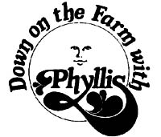

Picking beans is not my favorite pastime. The sun is hot. The bugs bite. My arms break out in a rash. My back aches and all that bending makes my knees creak.
Nevertheless, I do it. A lot. All through July and August. When the garden is still muddy from an afternoon rain ... and when the vegetable patch is so dry and cracked that it needs a good dousing with the hose.
Because if I've learned anything about them, it's that there's just one sure way to keep green beans bearing week after week after week right through the summer. They need to be picked. Every day! (Oh yes. They need water too, and if they don't get it they'll stop bearing. But more important than that, they need to be picked. )
So every day I pick them. I pull back the bush and I pluck off the pods that are filled with fat beans and I pick off some of the long, thin pods in which the beans haven't even formed yet. And I do all this harvesting gently, in respect to the bountiful plants that will-I know-supply me with beans all summer long if I'll just take care of them. (If I'll just, that is, pick them.)
I approach my task with the same-which is to say "little"-enthusiasm each day. (I don't look forward to picking beans.) I dawdle. I wait until mid-morning, when the sun has warmed the soil and dried the dew in the garden. I stall until the milking is done and the chickens have been fed and the baby calves are ready for their morning siesta in the pasture. I put off going out to that dratted bean patch as long as I can. And when I do go, I go reluctantly ... dragging my feet all the way to the garden.
And then-once I've left the noise of the radio and the telephone and the family's conversation behind-the magic begins to happen. The garden starts to weave its spell around me and the bean patch claims me as its own.
The sun is warm and friendly on my back. The breeze is soft. And beneath the beanstalks, the soil is cool and moist and dark. The garden smells clean and green and, from a few rows away, comes the almost heady scent of yellow mari golds ... the nose-tingling aroma of the tall, ferny dill.
The air is still. I can hear the soft drone of a bee earning her keep in the cucumbers and the contented clucking of a hen scratching for lunch in the chicken yard. High in the old maple tree, a blue jay scolds me away from her nest and-from far off down the highway-comes the occasional groan of a passing truck.
I smell. I listen. I acclimate myself to the quiet ... to the lack of urgency. I get down on my knees and I pick.
And as I pick, the bean patch becomes my whole world. Before I know it, I'm lost in a small universe that I don't ordinarily notice: a universe of leaves and stems and blossoms and beans . . . of tiny walking/crawling/flying things ... of minute cracks in the earth in which yet smaller creatures live.
It's a world in which there is no need to talk ... or to live up to anything ... or to impress anybody. A world slowed down to the steady "plunk, plunk" of beans failing into my basket. A world in which there is time to think. So I do. I review yesterday. I plan tomorrow. I consider next week. And I pick.
When the basket is full, I haul it off to the welcome shade of the big maple tree where my reward is the lawn rocker and a glass of cold lemonade. And as I sit and rock-with the dog snoozing beside me and a little breeze rippling the grass and the drone of a far-off combine harvesting winter wheat for background music-I-snap the hamper of beans.
Later, I rejoin the family and we wash and pack and process my day's picking. And later still, when the beans are encased like jewels in their shining glass jars, I put the containers up on the shelf with the beans I picked and packed and processed yesterday and the day before.
And as I polish the cooled jars, I remember the quiet hour of solitude I spent plucking the beans ... and the comfort of the maple tree's shade as I snapped them. And I store the filled containers away with pride. Picking beans, you know, really isn't a bad way to spend an hour or two on a summer day!
|
 |
|
|